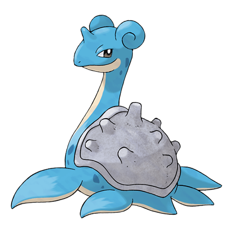

Назад
Лапрас

Лапрас — Покемон 1 поколения под номером 131 в Покедекс. Обитает он в регионе Канто и относится к Ледяному и Водному типу. Лапрас не эволюционирует. Люди изгоняли Лапрасов из привычной среды обитания вплоть до грани их исчезновения. Говорят, что по вечерам этот Покемон жалобно поёт в поисках других особей своего рода.
Тип:
Водяной
Ледяной
Эволюция
# 131 Лапрас